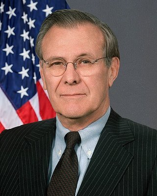

The Web
Across nine wars — for your technology, your money, your history, your mind, your energy, your information, your body, your sky, and your faith — you’ve seen the managed pipeline that replaced what they suppressed. Different names. Different decades. Different continents. Yet the same people keep appearing in every room. The Council on Foreign Relations publishes its membership. The Trilateral Commission publishes its membership. Bilderberg publishes its attendee lists. This investigation puts the published records side by side — separating directly documented rosters from credible reporting and structural inference — and lets you see the room.
The Same Room
Nine wars. Artificial intelligence, money, space, consciousness, energy, information, bodies, atmosphere, spirit. Each one looks like a different story — different agencies, different industries, different decades. But if you write down the names, the same surnames keep surfacing. The same organizations appear in the footnotes. The same foundation funded the research. The same law firm handled the paperwork. The same family chaired the board.
This isn’t a conspiracy theory. It’s a directory.
What makes this investigation different from the preceding chapters is that it doesn’t examine a single new domain. It maps the personnel overlap — the organizational chart that connects the nine domain wars and the managed pipeline you’ve already read. The core evidence isn’t classified. It is in their own published records and public websites.
The Overlap
The web isn’t hidden. You just weren’t supposed to put the lists in the same room.
The Membership List
Three organizations. Two publish their membership rosters; the third publishes its annual attendee lists. Members and regular participants from all three appear across every war in this series. Together they form the connective tissue of the 20th and 21st centuries — the nexus where intelligence, finance, defense, media, and policy meet in the same room, behind the same closed doors, and call it public service.
The Council on Foreign Relations

The CFR isn’t a conspiracy. It’s a membership organization that publishes the journal Foreign Affairs, hosts policy discussions, and places its members in government. The postwar international order was drafted inside a private study group before it was presented as public policy — and that same private organization has supplied a significant fraction of every presidential Cabinet since Dwight D. Eisenhower, while almost nobody outside Washington knows it exists.
CFR → CIA Director Pipeline
From 1953 through 2025 — more than seven decades — one private organization repeatedly supplied the directors of the Central Intelligence Agency. This isn’t inference. It’s their own roster.
The Trilateral Commission
An organization that published a report calling an “excess of democracy” a governability problem placed 19 members in the next presidential administration. The report wasn’t classified. The membership wasn’t secret. The administration happened anyway.
The Bilderberg Group
In April 2026 — the month this scroll was first composed — the 72nd Bilderberg Meeting convened at the Salamander Hotel in Washington, D.C., focusing heavily on defense technology, AI-driven warfare, and shifting transatlantic alliances. Published attendee lists included Palantir CEO Alex Karp, former Google CEO Eric Schmidt, and Anduril CEO Brian Schimpf (following the 2024 Madrid meeting attended by Anthropic CEO Dario Amodei and Google DeepMind CEO Demis Hassabis, and the June 2025 Stockholm meeting attended by both Peter Thiel and Karp). The roster continues to publish itself — and its center of gravity has migrated squarely into defense AI.
IG Farben built synthetic-rubber and fuel plants using slave labor at Auschwitz, and its joint-venture subsidiary Degesch (42.5% owned by IG Farben) held the patent and distributed Zyklon B. After World War II, Allied authorities broke IG Farben up into its three main successor firms — Bayer, BASF, and Hoechst — the same corporate lineage documented in Body Wars (Scroll 007). A man who worked for IG Farben before the war co-founded one of the most exclusive transatlantic policy forums on Earth after it. Now you see where the co-founder sat.
The Overlap


When dozens of the same policymakers, bankers, and executives cycle across the CFR roster, the Trilateral Commission, and Bilderberg’s invite-only Steering Committee and summits — that’s not a coincidence. That’s an org chart.
The Dynasty
Organizations have members. But some members built the organizations. Behind the membership lists are family trees — dynasties whose surnames appear across every scroll in this series, not because they joined the machine but because they designed it. The Rockefellers didn’t just attend CFR meetings. They chaired them for decades, funded them, and built the building they meet in.
The Rockefeller Through-Line
Oil → medicine → foreign policy → banking → trilateral governance → elite forums → population policy. Every link in this chain is from Rockefeller Foundation and General Education Board records and David Rockefeller’s own Memoirs.
The Dulles Brothers
The Bush Dynasty
W. Averell Harriman (Skull & Bones, 1913) co-founded W.A. Harriman & Co., which merged with Brown Brothers & Co. in January 1931 to form Brown Brothers Harriman — where Prescott Bush became a partner. Harriman later served as U.S. Ambassador to the Soviet Union, Ambassador to the United Kingdom, Secretary of Commerce, and Governor of New York. At the time of this writing (April 2026), Brown Brothers Harriman remained one of the oldest and largest private partnership banks in the United States.
The Insider Historian
Cecil Rhodes → Alfred Milner → Round Table groups → Royal Institute of International Affairs → Council on Foreign Relations → Trilateral Commission. Documented by the network’s own sanctioned historian, Carroll Quigley, using their own records.

Clinton named Quigley as a formative influence in his 1992 Democratic National Convention acceptance speech. He was a Rhodes Scholar. He attended Bilderberg in 1991 — the year before his presidential run. The network’s own historian taught the man who became President. Ronald Reagan, despite his outsider rhetoric, staffed his administration with over 80 CFR members. The personnel pipeline doesn’t care which party wins.
The Octopus
You’ve been looking at published membership lists and family trees. Board seats and CFR rosters. You might be thinking: this is just how power works. Elites know each other. They join the same clubs. It’s influence, not conspiracy.
One man disagreed. He thought the connections weren’t just social — they were operational. He called it the Octopus. He died in a hotel room in Martinsburg, West Virginia, with his wrists slashed, his notes missing, and a meeting with his source scheduled for the next morning.
You thought this investigation was about powerful people joining the same clubs. It’s actually about what happens when someone tries to draw the lines between them. The web doesn’t hide its membership. It hides its operations. And it buries its cartographers.
BCCI — The Bank That Connected Everything
INSLAW/PROMIS — The Software
Iran-Contra — The Operation
Surveillance software → hostage deal → arms-for-Contras → global money laundering → documented Contra drug-trafficking ties → federal obstruction. Every link investigated by Congress. The journalist who tried to connect them all was found dead.
The Price
The web doesn’t punish outsiders for believing in conspiracies. It punishes cartographers. The people who end up dead aren’t the ones speculating about the Illuminati on social media. They’re the ones with documents, source networks, and a meeting scheduled for the next morning.
Three of the largest newspapers in America attacked the journalist while CIA Public Affairs worked quietly behind the scenes to contain the fallout. Volume II of the CIA Inspector General’s report — confirming the agency’s knowledge of Contra drug ties and its thirteen-year reporting waiver — was released on Thursday, October 8, 1998, the exact day the House of Representatives voted to open the Clinton impeachment inquiry, with no press conference.
The Quigley Paradox
Carroll Quigley wasn’t killed. He experienced something quieter: acknowledged from a convention podium and ignored in the public square. As noted in Act III, Macmillan let Tragedy and Hope go out of print after roughly 8,800 copies and told Quigley the printing plates had been inadvertently destroyed in 1968 — an account Quigley privately disputed as suppression. Twenty-six years after publication, his former Georgetown student Bill Clinton praised him by name on national television at the 1992 Democratic National Convention, and almost nobody picked up the 1,348-page book.
The Cartographers
The web doesn’t fear exposure. It fears cartography. Allegations come and go. Org charts are permanent.
The Room
The oldest pattern in this series isn’t the CIA or the CFR. It’s the revolving door — the mechanism by which the same people cycle through intelligence, defense, finance, and policy without ever leaving the room. The door revolves. The room doesn’t change.
The Revolving Door


Dick Cheney died on November 3, 2025 at age 84 — closing the career of the most iconic revolving-door figure of the post–Cold War era. Yet the institutional architecture he and Donald Rumsfeld exemplified did not retire with them: in November 2026, the Pentagon failed its ninth consecutive financial audit (issuing a disclaimer of opinion on more than $4.8 trillion in assets ahead of Congress’s FY2028 clean-audit mandate), while active USPTO secrecy orders under the 1951 Invention Secrecy Act reached 6,653 in FY2026 (123 new orders, 13 rescinded, 38 “John Doe” orders). By 2026, the center of the revolving door had shifted from legacy oil-and-logistics contractors like Halliburton/KBR to AI and autonomous-warfare firms like Palantir and Anduril.
The Silicon Valley Pipeline

Between 2024 and late 2026, the CIA-seeded defense-tech pipeline accelerated sharply. In September 2024, Mastercard acquired In-Q-Tel–backed Recorded Future for $2.65 billion. In July 2025, the U.S. Army awarded Palantir an Enterprise Service Agreement worth up to $10 billion over ten years, consolidating 75 separate military contracts into a single procurement vehicle — helping propel Palantir’s public market capitalization into the multi-hundred-billion-dollar tier as Pentagon AI operations expanded across 2025–2026.
Operation Gladio & Five Eyes — Shadow Networks
Alongside covert European stay-behind structures, Western intelligence built a permanent signals-intelligence web: the Five Eyes alliance (United States, United Kingdom, Canada, Australia, and New Zealand), formalized under the 1946 UKUSA Agreement — declassified in 2010 — whose global bulk collection and cross-border sharing architecture was documented in Edward Snowden’s 2013 disclosures.
Nine Wars. One Pipeline. One Room.
Nine wars. One pipeline. One organizational chart. The names that appear in your AI feed, your banking system, your defense budget, your medical infrastructure, your media landscape, your energy grid, your atmosphere, and your spiritual marketplace — they sit on the same boards, attend the same annual meetings, and publish their own rosters.
The web isn’t a theory. It’s a directory. And it was always public.
Programs don’t disappear. They get board seats. Cartographers don’t retire. They get buried. And the room doesn’t close — it just stops sending invitations to journalists.
Now you’ve seen the room.
Nine wars. One pipeline. One room. Every chapter in Volume I is sourced, tier-graded, and verifiable. The reason most people can’t see the web isn’t that it’s hidden — it’s that no one puts the lists in the same room.
Now you have.